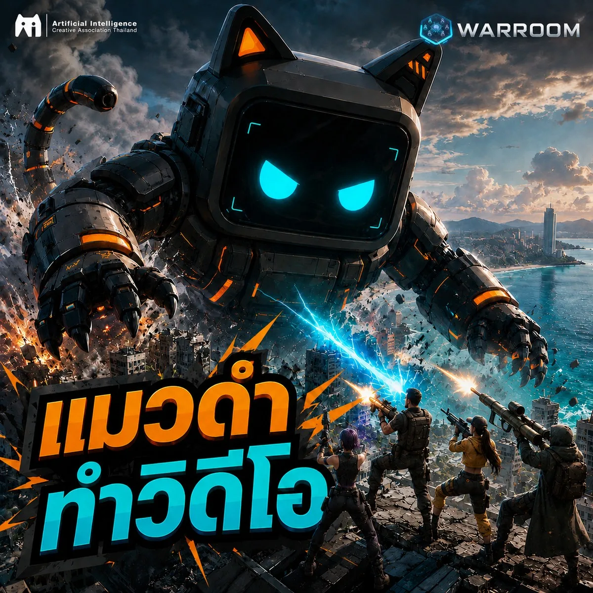
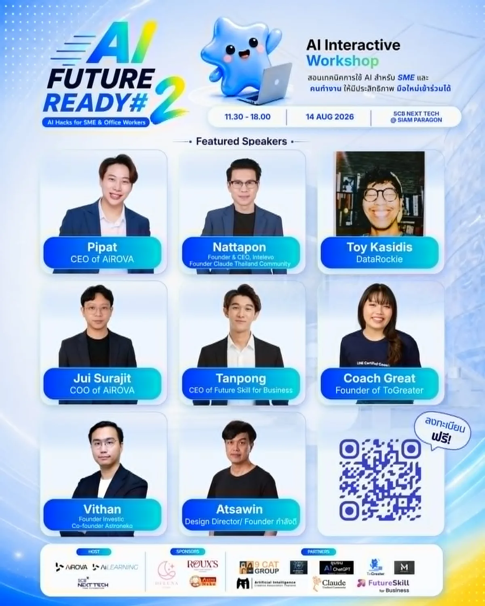
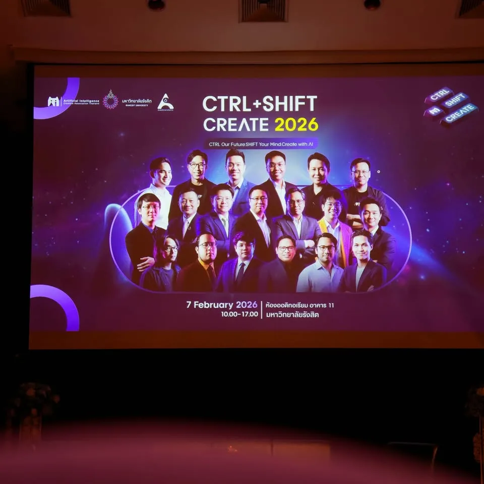
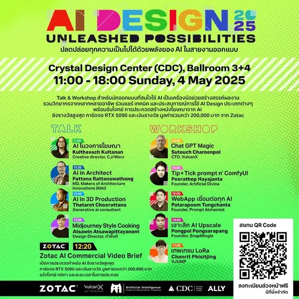
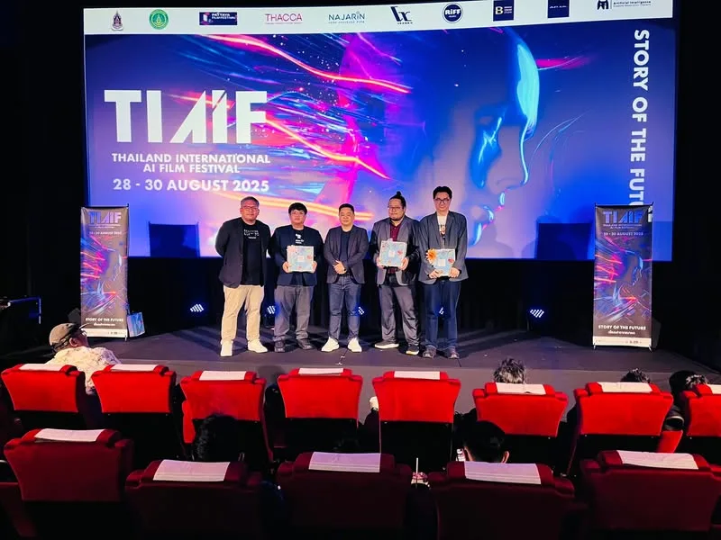
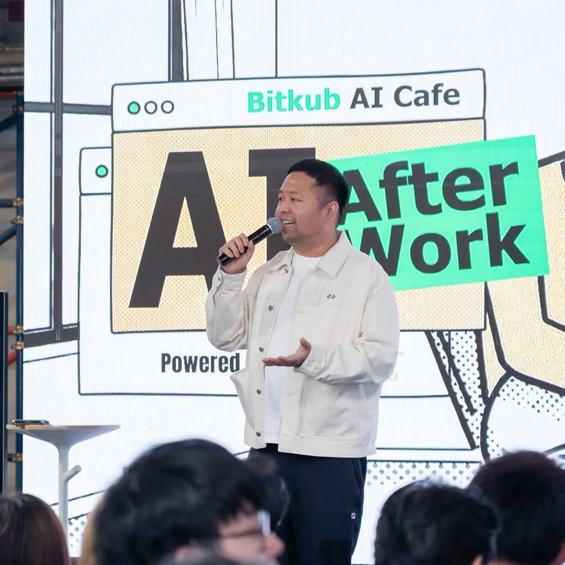
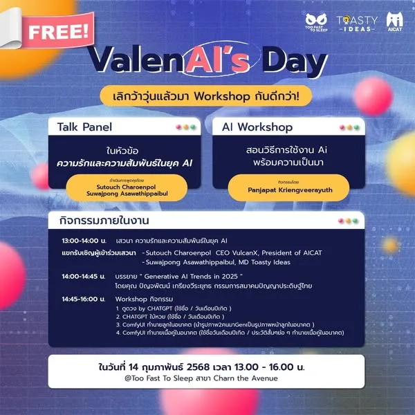
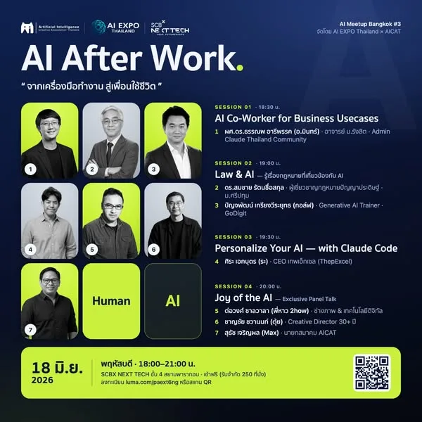
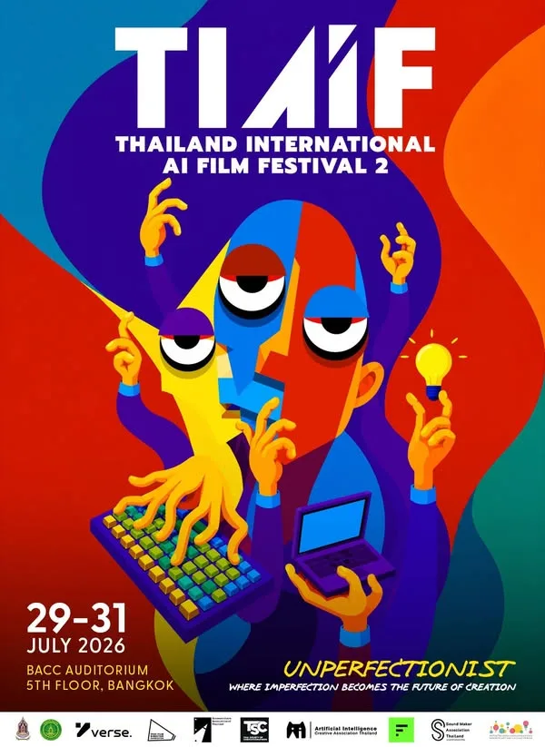
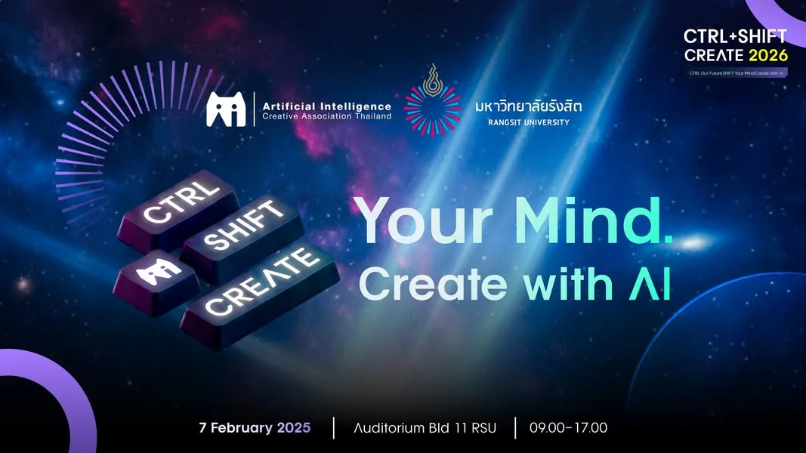

คณะทำงานขับเคลื่อนปัญญาประดิษฐ์ด้านอุตสาหกรรมสร้างสรรค์
ภายใต้คณะกรรมการเฉพาะด้านการขับเคลื่อนแผนด้านปัญญาประดิษฐ์แห่งชาติ
AI กำลังเขียนกติกาใหม่ของเศรษฐกิจสร้างสรรค์โลก ไทยมีทั้งวาระชาติ ทุนวัฒนธรรม และคนพร้อมลงมือ
กลไกขับเคลื่อน AI อุตสาหกรรมสร้างสรรค์ ภายใต้แผน AI แห่งชาติ
องค์ประกอบตามร่างคำสั่งฯ ออกแบบให้ครบทั้งห่วงโซ่: ข้อมูล คน การผลิต มาตรฐาน ตลาด
หน้าที่และอำนาจจากร่างคำสั่งคณะทำงานฯ ด้านอุตสาหกรรมสร้างสรรค์
ทุกกลไกถอดจากหน้าที่ตามคำสั่งโดยตรง — เชื่อมเป็นสายพานเดียว จากข้อมูลไทย สู่ตลาดโลก
กลไกเร่งที่ต่อยอดงบรัฐที่มีอยู่ — จ่ายเมื่อเกิดผล ไม่ตั้งศูนย์ใหม่
ปลายน้ำของห่วงโซ่คุณค่า — จากตรารับรอง สู่ตลาดส่งออก
สมาคมสร้างสรรค์ปัญญาประดิษฐ์ไทย — ก่อตั้งและลงมือทำจริงมาแล้วกว่า 3 ปี โดยคนทำงานสร้างสรรค์และ AI ตัวจริง










สรุปแผนงานหลักของคณะทำงานขับเคลื่อน AI ด้านอุตสาหกรรมสร้างสรรค์